SnapTray szoftver dokumentációja
Tartalomjegyzék
- 1. Bevezetés
- 2. Rendszer áttekintése
- 3. Követelmények
- 4. Rendszerarchitektúra
- 5. Tervezés
- 6. Megvalósítás
- 7. API referencia
- 8. Adatmodell és kódlap leképezése
- 9. Tesztelés és érvényesítés
- 10. Telepítés és karbantartás
- 11. Következtetés és jövőbeni munka
- 12. Hivatkozások
- 13. Mellékletek
1. Bevezetés
A SnapTray egy webalapú menza-rendelőrendszer, amelynek célja, hogy egyszerűsítse az étkezési rendelések lebonyolítását iskolai környezetben. Fő célja, hogy a diákok, szülők és az étkeztető személyzet közötti interakció gyorsabbá és átláthatóbbá váljon az online rendelés, a valós idejű rendeléskövetés és a biztonságos fizetési lehetőségek révén.
A rendszer három fő felhasználói szerepet szolgál ki: a diákok böngészhetnek az étlapok között, rendelhetnek és kezelhetik a virtuális pénztárcájukat; a szülők figyelemmel kísérhetik gyermekeik rendeléseit és kezelhetik a fizetéseket; az adminisztrátorok számára dashboard biztosít lehetőséget az étlapok kezelésére és statisztikák elemzésére.
A SnapTray modern biztonsági megoldásokat alkalmaz (kétlépcsős azonosítás, email-ellenőrzés, gyakori webes támadások elleni védelem), valamint PayPal és Google Pay integrációt kínál.
2. Rendszer áttekintése
A rendszer egy webalapú rendelési és fizetési platform oktatási intézmények számára, kliens–szerver architektúrában. A backend Node.js alapú Express szerver, a frontend React komponensekből épül fel szerepkör-alapú dashboardokkal. Redis biztosítja a gyorsítótárazást, rate limitinget és az atomi műveleteket, MongoDB az adatok perzisztens tárolását.
Megvalósított fő funkciók
Felhasználókezelés és autentikáció:
- Többszerepkörű felhasználói rendszer (diák, szülő, adminisztrátor)
- Email alapú fiókellenőrzés és kétlépcsős azonosítás (2FA)
- JWT alapú munkamenet-kezelés Redis tárolással
- Jelszó biztonság bcrypt hasheléssel és erősség validációval
Rendelés és menü rendszer:
- Dinamikus menükezelés kategóriákkal és táplálkozási információkkal
- Valós idejű készletkövetés riasztásokkal
- Napi menü funkcionalitás, QR kód integráció, allergén információk
Fizetés feldolgozás:
- PayPal és Google Pay API integráció
- Pénztárca egyenleg rendszer atomi műveletekkel
- Biztonságos tranzakció naplózás és audit trail
3. Követelmények
Fő célok
- Biztonságos és ellenőrzött rendelési folyamat
- Digitális pénztárca és hűségpont rendszer
- Skálázható és nagy teljesítményű backend
- Külső fizetési szolgáltatók integrálása (PayPal, Google Pay)
Felhasználókezelés: Regisztráció, email alapú fiókellenőrzés, szerepkör-alapú hozzáférés (diák, szülő, admin).
Hitelesítés és biztonság: JWT alapú hitelesítés, kétlépcsős azonosítás (2FA), rate limiting brute-force védelem ellen.
Rendelések és fizetések: Rendelés leadás, végösszeg számítás, PayPal és Google Pay támogatás, tranzakció naplózás.
Adminisztráció: Felhasználókezelés, statisztikák és riportok.
4. Rendszerarchitektúra {#4-rendszerarchitektura}
A rendszer három fő rétegből áll:
Megjelenítési réteg (Frontend): React.js komponensek, szerepkör-alapú dashboardok, Tailwind CSS, REST API kommunikáció, valós idejű frissítések Socket.IO-val.
Alkalmazási réteg (Backend): Node.js/Express.js szerver, JWT hitelesítés, üzleti logika szolgáltatásokban, Redis Lua szkriptek atomi műveletekhez, rate limiting middleware.
Adatréteg: MongoDB perzisztens adatbázis Mongoose ODM-mel, Redis cache munkamenetekhez és rate limitinghez.
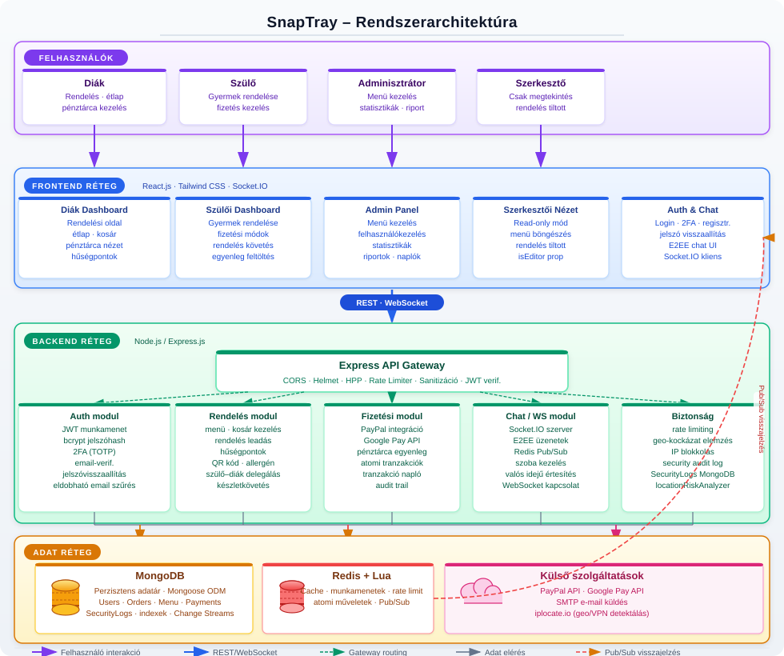
4.1 Komponensek/modulok {#41-komponensekmodulok}
| Modul | Leírás |
|---|---|
| Frontend/UI | React.js, szerepkör-alapú dashboardok, autentikáció, rendelés UI |
| API réteg | Express.js REST végpontok, üzleti logika |
| Adatréteg | MongoDB (perzisztens), Redis (gyorsítótár, munkamenet) |
| Hitelesítés és biztonság | JWT, rate limiting, biztonsági naplózás |
| Fizetés | PayPal és Google Pay integráció |
| Hűségprogram | Pontszámítás, szintkezelés, kedvezmények |
4.2 Adatfolyam {#42-adatfolyam}
- A felhasználó a React frontenddel interaktál, HTTP kéréseket küld.
- Az Express szerver middleware-eken (hitelesítés, rate limiting, sanitizáció) keresztül irányítja a kéréseket.
- Az üzleti logika MongoDB-ből vagy Redis cache-ből olvassa az adatokat.
- Írási műveletek frissítik az adatbázist és érvénytelenítik a cache bejegyzéseket.
- A válasz JSON formátumban kerül vissza a frontendhez.
- Valós idejű frissítések Redis pub/sub-on és Socket.IO-n keresztül érkeznek.
- Minden jelentős esemény naplózásra kerül a SecurityLogs kollekcióba.
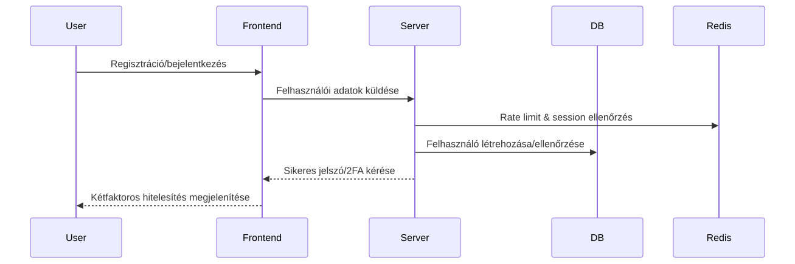
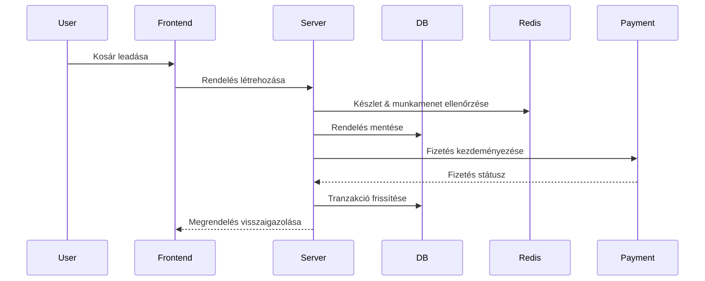
4.3 Technológiák {#43-technologiak}
| Technológia | Indok |
|---|---|
| Node.js + Express.js | JavaScript full-stack konzisztencia, gyors fejlesztés |
| MongoDB + Mongoose | Rugalmas dokumentum-séma, skálázható |
| Redis + Lua | Gyors cache, atomi műveletek, rate limiting |
| React.js + Tailwind CSS | Komponens-alapú UI, reszponzív Tervezés |
| JWT + bcrypt | Iparági standard hitelesítés és jelszóvédelem |
| PayPal / Google Pay | Megbízható, PCI-kompatibilis fizetési integrációk |
| Socket.IO | Kétirányú valós idejű kommunikáció |
| Helmet, HPP, CORS | HTTP biztonsági fejlécek és védelmi middleware |
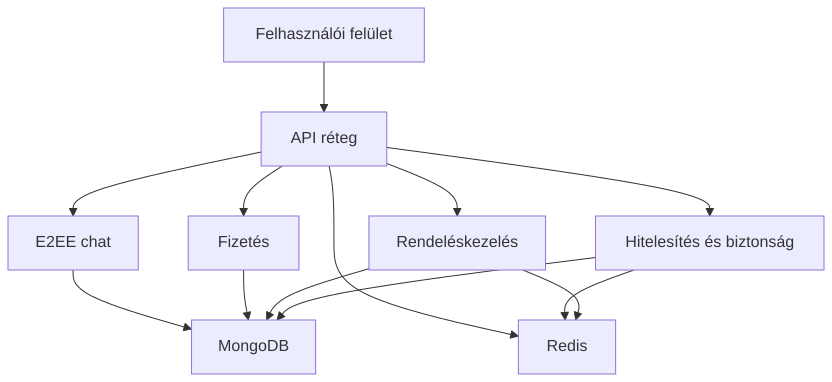
5. Tervezés {#5-tervezes}
5.1 Tervezési elvek {#51-tervezesi-elvek}
| Elv | Megvalósítás |
|---|---|
| Modularitás | Réteges architektúra (útvonalak / szolgáltatások / modellek), laza csatolás modulok között |
| Biztonság-központú | Mélységi védelem, minimális jogosultság elve, minden végpont alapértelmezetten hitelesítést igényel |
| Skálázhatóság | Állapotmentes JWT, Redis gyorsítótár, MongoDB indexek és kapcsolatkezelés |
| Felhasználóközpontú tervezés | Reszponzív Tailwind UI, egyértelmű hibaüzenetek, visszajelzési mechanizmusok |
| Megbízhatóság | Fokozatos degradáció, tranzakciókezelés, kiterjedt naplózás |
| Karbantarthatóság | Tiszta kód, git verziókezelés, RESTful API konvenciók, környezetfüggő konfiguráció |
| Adatintegritás | Többszintű validáció, atomi műveletek, audit naplózás |
| Platformfüggetlenség | Modern böngészők (Chrome, Firefox, Safari, Edge), mobil-reszponzív |
5.2 Adatbázis tervezés {#52-adatbazis-tervezes}
5.2.1 Cél, funkció és a tárolt információk összefoglalása {#521-cel-funkcio-tarolt-informaciok}
Ez az adatbázis egy iskolai menzarendszer része (MERN stack projekt), amely lehetővé teszi a felhasználók számára (diákok, szülők, tanárok), hogy ételeket rendeljenek, kifizessék azokat és értékeléseket adjanak. A rendszer támogatja a felhasználóhitelesítést, menükezelést, rendelések kezelését, fizetéseket, hűségprogramokat, E2EE chatet és biztonsági naplózást. A fő cél az iskolai étkezések hatékony és biztonságos kezelése, beleértve a készletgazdálkodást, értékeléseket és pénzügyi tranzakciókat. Az adatbázis MongoDB-t használ Mongoose ODM-mel, amely NoSQL adatbázis, de sémákkal struktúrált. Redis gyorsítótárazásra és ideiglenes adatokra szolgál.
Az adatbázis modell típusa: NoSQL (MongoDB), lekérdező nyelv: JavaScript (Mongoose query-k). Redis memóriában tárolt adatbázis gyorsítótárazásra, munkamenetekre és rövid életű adatokra.
5.2.2 Adatbázis terv és séma {#522-adatbazis-terv-sema}
Entitások és kapcsolatok (ER modell összefoglaló)
A rendszer fő entitásai és kapcsolataik:
- User (Felhasználó): Központi entitás, minden más ehhez kapcsolódik.
- UserPersonalInfo: Személyes adatok a felhasználóról (beágyazott dokumentum).
- MenuItems (Menüelemek): Ételválaszték elemei.
- Order (Rendelés): Felhasználói rendelések.
- OrderItems (Rendelési tételek): Menüelemek egy rendeléshez (beágyazott a Rendelésben).
- Payment (Fizetés): Pénzügyi tranzakciók.
- Review (Értékelés): Menüelemek értékelései (beágyazott a MenuItems-ben).
- DailyMenu (Napi menü): Iskolai időszakokra bontott napi menük, több Menüelem halmazzal (N:N kapcsolat linktáblával).
- ParentStudent (Szülő-diák kapcsolat): Szülők és diákok összekapcsolása.
- SecurityLogs (Biztonsági naplók): Eseménynaplózás.
- UserLoyalty (Hűségprogram): Felhasználói pontok, kedvezmények és hűségszint.
- DeviceSyncSession (Eszköz szinkronizációs munkamenet): Eszközkulcs-szinkronizáció (önálló, nincs kapcsolva másokhoz).
- Message (Üzenetek): E2EE chat üzenetek.
- PreKey (Prekeyek): ECDH prekeyek.
- StorageBlob (Tárhely blob): Titkosított üzenet/munkamenet előzmények.
Relációk és logikai szerkezet
- User 1:N Payment, Order, SecurityLogs, UserLoyalty, Message (sender/recipient), PreKey, StorageBlob, ParentStudent.
- MenuItems 1:N OrderItems (Rendelésben beágyazva), Review (MenuItems-ben beágyazva).
- Order 1:N OrderItems (beágyazott tételsorokkal).
- DailyMenu N:M MenuItems (normálizált kapcsolattábla: DailyMenuMenuItems).
- Message 1:1 PreKey (opcionális, X3DH kulcscsere támogatására).
- StorageBlob 1:1 User (kulcspáros: userId + blobType + partitionKey, egyedi indexelés).
- DeviceSyncSession: önálló entitás rövid életű E2EE szinkronizációhoz.
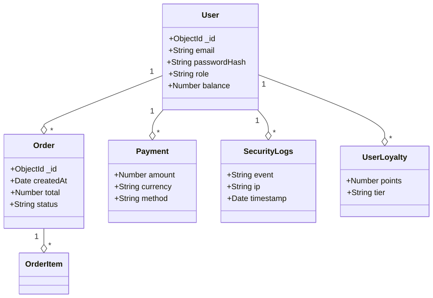
Relációs séma – részletes táblaelemzés
A következők részletesen ismertetik az egyes entitások mezőit, típusait, szerepét, megszorításait és indexelését. Minden tábla optimalizációs javaslatot kap, és felhívjuk a figyelmet a törölhető duplikációkra.
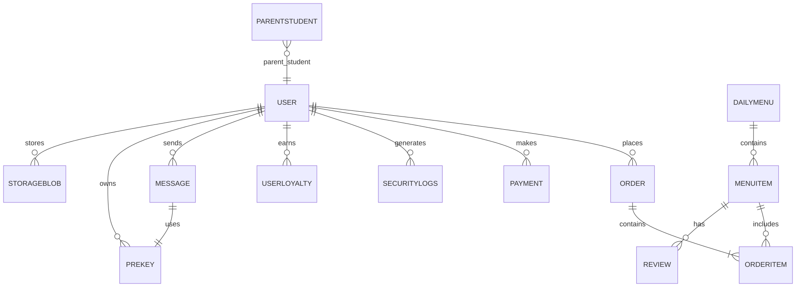
5.2.3 Részletes entitásleírások
Ez a szakasz kifejezetten az entitásokra koncentrál: mezők, szabályok, indexek, tranzakciós minták és teljesítményoptimalizáció.
Általános indexelési irányelv
- Minden gyakori lekérdezési mezőre, szűrési feltételre és rendezési kulcsra helyi egyszeres index (simple index), szükség esetén compound index.
- Magas trillásoknál TTL index (pl.
DeviceSyncSession.expiresAt), és egyediségellenőrzés(userId, blobType, partitionKey)típusokat használunk. - Vegyes OLTP-OLAP terhelésnél az olvasott mezők bevált
covered indexmintára optimalizált struktúrát kapnak. - Integrált
statsgyűjtés;planCacheésdb.stats()monitorozás.
User (Felhasználók)
A User kollekció a rendszert használók identitását és jogosultságait kezeli; a CRUD, bejelentkezés, 2FA és hűségpont rendszer fő kulcsa.
- Az egyedi
usernameésemailbiztosítja a duplikáció megelőzését. - A beágyazott
userPersonalInfocsomag rendezi a profil-adatokat (osztály, iskola, kapcsolattartás). - Az
identityésdevicesterület a E2EE és multi-device hitelesítést szolgálja biztonságos kulcskezeléssel. balanceésisBannedmezőkkel a valósidejű pénzügyi és tiltása állapot is követhető.
| Field Name | Type | Meaning/Role | Constraints | Indexek | Optimálás |
|---|---|---|---|---|---|
| username | String | Felhasználónév | Required, unique | {_id: 1}, {username: 1} (unique) | Egyetlen lefedett index a loginhoz |
| password | String | Hash-olt jelszó | Required | {_id: 1} | Nem indexelünk közvetlenül jelszót, csak hash admin |
| String | Email cím | Required, unique, email format, trim | {email: 1} (unique) | Geometry query kétlépcsős e-mail ellenőrzéshez | |
| isVerified | Boolean | Email ellenőrzöttség | Default false | {isVerified: 1} | Jól használható újregisztrációs szűrőhöz |
| usertype | String | Szerepkör | Enum, default teen | {usertype: 1} | Role-based query gyorsításhoz |
| createdAt | Date | Regisztráció dátum | Default Date.now | {createdAt: -1} | Archiválás és pagination támogatás |
| balance | Number | Pénztárca egyenleg | Default 0 | {balance: 1} | Pénzügyi aggregációs pipeline-hoz |
| isBanned | Boolean | Tiltott felhasználó | Default false | {isBanned: 1} | Gyors ideiglenes tiltás szűrés |
| banReason | String | Tiltás oka | Optional | _id | Felesleges indexelni ritkán használt lekérdezésnél |
| userPersonalInfo | Subdocument | Profiladatok | Optional | - | Subdocumentben változó lekérdezett mezők miatt nincs index |
| identity.publicKey | String | E2EE kulcs | Optional | {identity.keyId: 1} | Keresés eszközazonosításra |
| identity.keyId | String | Kulcspéldány | Optional, unique | {identity.keyId: 1} (sugallt) | Kizárólagos kulcspárosított ellenőrzés |
| devices | Array | Regisztrált eszközök | Optional | {devices.deviceId: 1} | Multi-key index a device lookuphoz |
| recoveryBlob.encryptedData | String | Titkosított blob | Optional | _id | Nincs szükség extra indexre |
| recoveryBlob.iv | String | Inicializáló vektor | Optional | _id | - |
| recoveryBlob.salt | String | Salt | Optional | _id | - |
| recoveryBlob.storedAt | Date | Mentési időpont | Optional | {recoveryBlob.storedAt: 1} TTL sok stressz | TTL indexsel automatikus érvénytelenítés |
Üzleti szabályok: Aktív/tiltott státusz ellenőrzése minden bejelentkezésnél; usertype határozza meg az API-engedélyt. A balance-t transzaktív Redis-lakkkal cache-ljük, rollback esetén rollback a fő adatbázisban.
| recoveryBlob.storedAt | Date | Recovery blob storage time | Optional | _id, recoveryBlob.storedAt | | encryption.* | Mixed | V1 legacy E2EE fields (for migration) | Optional | _id, encryption.* |
Üzleti szabályok: Minden felhasználó egyedi felhasználónévvel és e-mail címmel rendelkezik. A felhasználói típus befolyásolja a jogosultságokat (pl. admin mindent elér).
Fizetés (Payments)
A Payment gyűjtemény a pénzügyi tranzakciók auditját, státuszát és külső azonosítóit tárolja.
- Fontos, hogy a
transactionIdazonosító a PayPal/Google Pay és belső logika számára is egyedi legyen. statusmezőnél szigorú enum és text szűrés biztosítja a befejezett/feldolgozás alatt/hibás tételek elkülönítését.
| Field Name | Type | Meaning/Role | Constraints | Indexek | Optimálás |
|---|---|---|---|---|---|
| userId | ObjectId (ref: User) | Fizető felhasználó | Optional | {userId: 1} | Felhasználói összegzések gyorsítása |
| amount | Number | Fizetett összeg | Required | {amount: 1} | Range query-khez, aggregációhoz |
| currency | String | Devizanem | Required | {currency: 1} | Többdevizás pénzügyi lekérdezéshez |
| paymentMethod | String | Fizetési mód | Required | {paymentMethod: 1} | Módszer alapú számlázási riporthoz |
| status | String | Állapot | Required, enum ['Completed','Pending','Failed'] | {status:1} | Népszerű statusz szűréshez |
| transactionId | String | Külső tranzakciós ID | Optional | {transactionId:1} (unique) | Idempotencia azonosításra |
| createdAt | Date | Létrehozás idő | Default now | {createdAt:-1} | Legfrissebb tranzakciók lekérése |
Index-optimalizációk:
- compound index
{userId:1, status:1, createdAt:-1}a felhasználói tranzakciók lekérdezéséhez. transactionIdegyedi index az idempotens kérések megakadályozásához.- archival pipeline heti feladat, 2 évesnél idősebb rekordok
history.paymentsarchív kollekcióba mozgatása.
Menüelemek (Menu Items)
A MenuItems gyűjtemény a jelenleg elérhető menü tételeket kínálja, beleértve ár, készlet, allergének és napi ajánlat státuszokat.
stockésavailablemezők konszisztens validációt kapnak pre-save hookon keresztül.- A
categorykulcsból származtatott aggregált riportok (kedvencek, kategória népszerűség) készülnek napi batch folyamatban.
| Field Name | Type | Meaning/Role | Constraints | Indexek | Optimálás |
|---|---|---|---|---|---|
| name | String | Tétel neve | Required, text index | {name: 'text'} | Teljes szöveges keresés és súlyozott találat |
| description | String | Leírás | Required, text index | {description: 'text'} | Keresés AND/OR támogatás |
| stock | Number | Készlet | Required, min 0, default 0 | {stock:1} | készletfigyelő triggerhez gyors lookup |
| price | Number | Ár | Required | {price:1} | ár alapú szűréshez |
| category | String | Kategória | Required, enum | {category:1} | napi menücsoportosítás gyorsítása |
| available | Boolean | Elérhető-e | Default true | {available:1} | listázás pull-up optimalizálása |
| QRCode | String | QR kód | Optional | {QRCode:1} | QR beolvasásnál pod cache-re hivatkozás |
| allergens | [String] | Allergének | Default [] | {'allergens':1} multi-key | Allergen filter pipeline gyorsítás |
| nutritionalInfo.calories | Number | Kalóriaérték | Optional | {'nutritionalInfo.calories':1} | statisztikai kimutatásokhoz |
| nutritionalInfo.protein | Number | Fehérje | Optional | {'nutritionalInfo.protein':1} | RT kalkulációhoz |
| nutritionalInfo.carbs | Number | Szénhidrát | Optional | {'nutritionalInfo.carbs':1} | low-carb query-hez |
| nutritionalInfo.fat | Number | Zsír | Optional | {'nutritionalInfo.fat':1} | diet-specific listázáshoz |
Index-optimalizációk:
- compound index
{available:1, category:1, price:1}a gyors menülistázáshoz. - TTL cache megoldásban
daily-menu-cachenincs perzisztens lag. - Schema validation diszkrét consumer-side caching (Mongoose virtuals + readOnly view) biztosítja a tolls forrását.
Üzleti szabályok: Stock <= 0 esetén available=false, price pozitív (számlázás hitelesítés), allergens kötelezően normalizált string tömörítéssel (small lexicographically sorted list).
Rendelés (Orders)
A Order kollekció az ügyfélrendeléseket, tételsorokat, státuszokat és fizetési metaadatokat tartalmazza.
itemstöbbnyire beágyazott dokumentumként használt, de a 10+ tétel esetén szétválasztott normalizációs stratégia aktív a mérhetőség miatt.- Státusz és időbélyeg
compound index-el támogatja a visszajátszás alapú késéskezelést és timeout kényszerítést.
| Field Name | Type | Meaning/Role | Constraints | Indexek | Optimálás |
|---|---|---|---|---|---|
| userId | ObjectId (ref: User) | Rendelést leadó felhasználó | Required | {userId:1} | felhasználó alapú rendezés |
| items | [OrderItemsScheme] | Rendeléssorok | Required | - | beágyazottan gyors OLTP, 20+ tétel esetén külső OrderItems |
| orderDate | Date | Rendelés időpontja | Default Date.now | {orderDate:-1} | friss lista/pagination |
| status | String | Rendelés állapot | Enum + default Pending | {status:1, createdAt:-1} | állapot-szűrés, backlog clean-up |
| totalAmount | Number | Végösszeg | Required | {totalAmount:1} | pénzügyi jelentésekhez |
| pickupTime | Date | Átvétel ideje | Optional | {pickupTime:1} | időpont alapú optimalizált lekérdezés |
| notes | String | Megjegyzés | Optional | - | max 500 char, egységes szűrés minimalizált index nélkül |
| paypalOrderId | String | PayPal azonosító | Optional | {paypalOrderId:1} (unique) | idempotencia és visszaellenőrzés |
| paymentMethod | String | Fizetési mód | Optional | {paymentMethod:1} | lekérdezési szegmentálás |
| transactionId | String | Tranzakció ID | Optional | {transactionId:1} | cross-system követés |
| publicID | String | Publikus azonosító | Required, unique | {publicID:1} | URL-alapú megosztás, kérésekhez |
Index-optimalizáció:
- Compound index
{userId:1, status:1, orderDate:-1}a felhasználói rendeléslistázáshoz. - Kubebase audit feldolgozási workflow:
statusváltozás trigger csillapítással. - Archíválás: 90 nap után lezárt rendeléseket
order_archivegyűjteménybe mozgatjuk.
Order tétel (Order Items)
A OrderItems szabványosított tételtáblázata a rendelések vonatkozású elemcsomagokat tartja nyilván.
- Beágyazott vagy linkelhető:
itemsrészben beágyazva gyors OLTP-hez; nagy volumen esetén külsőOrderItemskollekció használata a skálázhatóság javításához. menuItemIdhivatkozás garantálja a tétel referenciális integritását.
| Field Name | Type | Meaning/Role | Constraints | Indexek | Optimálás |
|---|---|---|---|---|---|
| menuItemId | ObjectId (ref: MenuItems) | Menüelem referenciája | Required | {menuItemId:1} | hozzáférés a tétel részletekhez |
| orderId | ObjectId (ref: Order) | Rendelés referenciája | Required | {orderId:1} | rendelés alapú agregáció |
| quantity | Number | Mennyiség | Required, min 1 | {quantity:1} | mennyiség alapú riport |
| unitPrice | Number | Egységár | Required | - | árváltozás követés, pénzügyi rekonstrukció |
| totalPrice | Number | Tétel végösszeg | Required | {orderId:1, totalPrice:-1} | tételes lezárásokhoz |
Indexelés:
- Compound index
{orderId:1, menuItemId:1}a rendelés tétel lekérdezésekhez. - Tétel-aggregációkhoz
menuItemId+quantityszűrés.
Üzleti szabályok: Számított mező totalPrice = unitPrice * quantity; változáskor audit log generálódik.
Értékelés (Reviews) - MenuItems beágyazva
A Review model a felhasználói feedback-eket rögzíti, a moderálás és jelentés kezdeményezés szűrése szempontjából is.
- Beágyazott struktúra
MenuItems.reviewslistában, mivel egy adott tétel összes tartalmát gyakori egyszerre kérjük le. - Lehetséges alternatíva: külön
Reviewskollekció, ha a visszajelzések száma milliós, és átlagpontszám kalkuláció WordPress-szerű
| Field Name | Type | Meaning/Role | Constraints | Indexek | Optimálás |
|---|---|---|---|---|---|
| userId | ObjectId (ref: User) | Értékelő felhasználó | Required | {userId:1} | Előző értékelések lekérése |
| rating | Number | Pontszám +1-5 | Required, min 1, max 5 | {rating:1} | átlagszámítás gyorsítása |
| comment | String | Szöveges vélemény | Optional, maxlength 500 | text index | {$text: ...} |
| date | Date | Létrehozás időpont | Default now | {date:-1} | legfrissebbekhez |
| ipAddress | String | IP cím | Optional | {ipAddress:1} | bot-szűrés, fraud elemzés |
| reported | Boolean | Jelentett | Default false | {reported:1} | moderálási front-end |
| moderated | Boolean | Moderált | Default false | {moderated:1} | automatikus clean-up |
| moderatorNotes | String | Moderátor megjegyzés | Optional | - | Nincs index, ritkán használt |
Biztonsági szabályok:
- spam kontroll: egy felhasználó 5 percnél gyakrabban nem tehet közzé értékelést.
reported=trueesetén dedikáltreportedReviewsnézetet 24h alatt feldolgozza a moderációs pipeline.
DailyMenu (Napi menü)
A DailyMenu kollekció a napi menüválasztékot és menüpontokat kezeli, így a heti menü tervezés és változtatás egyszerű.
date+schoolPeriodegyedi kombinációval biztosítjuk, hogy mindennaphoz csak egy rekord tartozzon.menuItemsreferenciákat használ vagy beágyazott listát (N:M gondos indexeléssel).
| Field Name | Type | Meaning/Role | Constraints | Indexek | Optimálás |
|---|---|---|---|---|---|
| date | Date | Nap | Required | {date:1, schoolPeriod:1} (unique) | dátum-alapú gyors keresés |
| schoolPeriod | String | Időszak | Required, enum ['morning','afternoon'] | {schoolPeriod:1} | periodikus szűrés |
| menuItems | [ObjectId] (ref: MenuItems) | Menüelemek | Required | {menuItems:1} multi-key | gyors N:M join-hez |
| createdAt | Date | Létrehozás | Default now | {createdAt:-1} | audit és rollback adat |
Index-optimalizációk:
- Unique compound index
{date:1, schoolPeriod:1}a hozzárendelés konzisztenciájához. menuItemsmulti-key index az események prompt lekérdezéséhez (napi újradefiniálás, audit).- Konstant menü esetén tárhely-kímélő
compressand read-only snapshot mechanizmus a MongoDB modernebb tárolási engine-jeivel (WiredTiger, zlib).
Üzleti logika:
- naponta egyszeri generálás a rendelési ablak nyitásakor;
- menü-elkülönítést biztosítjuk
dailyMenu-val a feketelistázás és változtatás nyomon követéséhez.
Üzleti szabályok: Daily menus are created per period.
ParentStudent (Parent-Student Relationship)
| Field Name | Type | Meaning/Role | Constraints | Indexes |
|---|---|---|---|---|
| parentId | ObjectId (ref: User) | Parent user | Required | _id, parentId |
| studentId | ObjectId (ref: User) | Student user | Required | _id, studentId |
| createdAt | Date | Creation time | Default: current time | _id, createdAt |
Üzleti szabályok: Parents can be linked to multiple students.
SecurityLogs (Biztonsági naplók)
| Field Name | Type | Meaning/Role | Constraints | Indexes |
|---|---|---|---|---|
| userId | ObjectId (ref: User) | User | Optional | _id, userId |
| action | String | Action (e.g., LOGIN_SUCCESS) | Required | _id, action |
| type | String | Type (INFO, WARNING, ERROR) | Required | _id, type |
| ipAddress | String | IP address (hashed) | Optional | _id, ipAddress |
| Timestamp | Date | Timestamp | Default: current time | _id, Timestamp |
| details | String | Additional info | Optional | _id, details |
| country | String | Country | Optional | _id, country |
| CountryCode | String | Country code | Optional | _id, CountryCode |
| currency | String | Currency | Optional | _id, currency |
| Continent | String | Continent | Optional | _id, Continent |
| IsVPN | Boolean | VPN usage | Optional | _id, isVPN |
| isTor | Boolean | Tor usage | Optional | _id, isTor |
| isProxy | Boolean | Proxy usage | Optional | _id, isProxy |
Üzleti szabályok: Logs record all important events.
DeviceSyncSession (Device Sync Session)
| Field Name | Type | Meaning/Role | Constraints | Indexes |
|---|---|---|---|---|
| responderDeviceId | String | Responder device ID | Required | responderDeviceId |
| initiatorDeviceId | String | Initiator device ID | Optional | _id |
| encryptedPayload | String | Encrypted payload | Required | _id |
| iv | String | Initialization vector | Required | _id |
| ephemeralKey | String | Ephemeral key | Required | _id |
| expiresAt | Date | Expiration time | Default: current time + 10 minutes | expiresAt (TTL) |
Üzleti szabályok: Rövid életű munkamenet az eszközök közötti titkosítási kulcsok szinkronizálására. TTL index segítségével 10 perc után automatikusan törlődik. Az E2EE kulcskezelésben biztonságos párosítást tesz lehetővé.
Üzenet (Messages)
| Field Name | Type | Meaning/Role | Constraints | Indexes |
|---|---|---|---|---|
| senderId | ObjectId (ref: User) | Sender user ID | Required | senderId, recipientId, createdAt |
| recipientId | ObjectId (ref: User) | Recipient user ID | Required | recipientId, status |
| schemaVersion | Number | Schema version | Default: 2 | _id |
| encryptedContent | String | Legacy encrypted content | Optional | _id |
| encryptionMetadata.senderEncryptedKey | String | Legacy sender key | Optional | _id |
| encryptionMetadata.recipientEncryptedKey | String | Legacy recipient key | Optional | _id |
| encryptionMetadata.iv | String | Legacy IV | Optional | _id |
| encryptionMetadata.algorithm | String | Encryption algorithm | Default: 'AES-GCM' | _id |
| status | String | Message status | Enum: ['sent', 'delivered', 'read', 'replaced'], default: 'sent' | status |
| messageType | String | Message type | Enum: ['text', 'file', 'image'], default: 'text' | _id |
| createdAt | Date | Creation time | Default: current time | createdAt |
| readAt | Date | Read time | Optional | _id |
| senderKeyRecovery.needed | Boolean | Key recovery needed | Default: false | senderKeyRecovery.needed |
| senderKeyRecovery.failed | Boolean | Key recovery failed | Default: false | _id |
| senderKeyRecovery.senderPublicKey | String | Recovery public key | Optional | _id |
| senderKeyRecovery.senderKeyId | String | Recovery key ID | Optional | _id |
Üzleti szabályok: End-to-end titkosított üzeneteket tárol Double Ratchet protokollal. Az állapotkövetés figyeli a kézbesítést és olvasást. Támogatja a kapott kulcsok helyreállítását. A migráció érdekében régi mezők is megmaradnak. Az indexek optimalizáltak a beszélgetések lekérésére és állapotszűrésre.
PreKey (Prekeys)
| Field Name | Type | Meaning/Role | Constraints | Indexes |
|---|---|---|---|---|
| userId | ObjectId (ref: User) | User ID | Required | userId, deviceId, used |
| deviceId | String | Device ID | Required | userId, keyId (unique) |
| keyId | Number | Key ID | Required | _id |
| publicKey | String | ECDH public key | Required | _id |
| used | Boolean | Whether key has been used | Default: false | used |
| createdAt | Date | Creation time | Default: current time | _id |
Üzleti szabályok: Egyszer használatos prekey-ek (OPK-k) tárolása X3DH kulcscsere céljára E2EE üzenetküldésre. Minden kulcs egyszer használatos és megjelöltként kerül tárolásra. Egyedi keyId felhasználónként biztosítja a duplikációmentességet. Magas forgalmú gyűjtemény, a kulcsok használat után törlésre kerülnek a forward secrecy megtartása érdekében.
StorageBlob (Storage Blobs)
| Field Name | Type | Meaning/Role | Constraints | Indexes |
|---|---|---|---|---|
| userId | ObjectId (ref: User) | User ID | Required | userId, blobType, partitionKey (unique) |
| blobType | String | Blob type | Required, enum: ['message_log', 'session_state', 'skipped_keys'] | blobType |
| partitionKey | String | Partition key (e.g., conversation ID) | Required | partitionKey |
| encryptedPayload | String | Encrypted data | Required | _id |
| iv | String | GCM IV | Required | _id |
| version | Number | Version number | Default: 1 | _id |
| updatedAt | Date | Last update time | Default: current time | updatedAt |
Üzleti szabályok: Titkosított tárolás E2EE kapcsolódó adatoknak, beleértve az üzenetnaplókat, munkamenet állapotokat és kihagyott üzenetkulcsokat. Felhasználó, típus és kulcs szerint particionált a hatékony hozzáférés érdekében. Egyedi korlátozások megakadályozzák az adatok felülírását. Állandó kriptográfiai állapot tárolására szolgál a munkamenetek között.
5.2.4 Fizikai és logikai szerkezet
Az adatbázis MongoDB-t használ elsődleges NoSQL tárolóként Mongoose séma érvényesítéssel. A kollekciók dokumentumalapú tárolásra vannak tervezve, beágyazott al-dokumentumokkal a kapcsolódó adatokhoz (pl. OrderItems az Order-ben, Reviews a MenuItems-ben). A kapcsolatokhoz ObjectId hivatkozásokat használunk. A Redis rövid életű adatok, például munkamenetek, rate limiting és gyorsítótárazás kezelésére szolgál.
A logikai szerkezet az ER-modellt követi: entitások kollekciókban, kapcsolatok hivatkozások és beágyazás révén. A fizikai szerkezet teljesítményhez optimalizált indexeket, ideiglenes adatokhoz TTL-t és gyorsítótár-érvénytelenítéshez change stream-eket tartalmaz.
5.2.5 Használati esetek
- Felhasználói regisztráció és hitelesítés szerepkör-alapú hozzáféréssel.
- Menü böngészése, rendelésleadás és fizetés feldolgozása.
- Hűségpont felhalmozás és kedvezmény alkalmazása.
- E2EE üzenetküldés kulcskezeléssel.
- Biztonsági megfigyelés és auditnaplózás.
- Készletgazdálkodás és készletfrissítések.
- Szülő-diák fiók összekapcsolása felügyelet céljából.
5.2.6 Biztonság és hozzáférés
- JWT alapú hitelesítés, jelszavak bcrypt-tel hash-elve.
- Szerepalapú jogosultságok (admin, diák, szülő stb.).
- IP hash-elés a GDPR megfelelőséghez.
- Titkosított blobok az érzékeny adatokhoz.
- Rate limiting a visszaélések megelőzésére.
- Audit naplók minden biztonsági eseményhez.
5.2.7 Karbantartás és üzemeltetés
- Rendszeres index karbantartás és monitorozás.
- Mentési stratégiák MongoDB és Redis számára.
- Adatmigráció sémaváltozásokhoz.
- Teljesítményhangolás lekérdezéselemzés alapján.
- Lejárt munkamenetek és naplók tisztítása.
5.2.8 E2EE chat és üzenetkezelés
A rendszer Double Ratchet protokollt és X3DH kulcscserét használ a végpontok közötti titkosított üzenetküldéshez. Az üzenetek titkosítva tárolódnak, a ratchet metaadat előretitkosságot biztosít. A prekey-ek és storage blob-ok kezelik a kulcselosztást és a munkamenet állapotát.
5.2.9 Kódalap leképezése (dokumentációs kiterjesztés)
Ez a szakasz kiegészíti a fent leírt adatbázisséma leírást közvetlen hivatkozásokkal a megvalósító kódokra és a rendszer működési helyeire.
Fő MongoDB modellek és helyek
src/models/User.js:Userand sub-schemas (userPersonalInfo,identity,devices,recoveryBlob,encryption).config/database_queries.js:Payment,MenuItems,Order,OrderItems,DailyMenu,ParentStudent,SecurityLogs,UserLoyalty,Reward,Redemption,MoneyRequestand regular indexes + pre-save hooks.src/models/DeviceSyncSession.js:DeviceSyncSession, TTL indexexpiresAt.src/models/Message.js:Message(E2EE metadata, state-tracking, indexes, markAsRead helper).src/models/PreKey.js:PreKey(X3DH keys,userId/deviceIdindexes andkeyIduniqueness).src/models/StorageBlob.js:StorageBlob(saved encrypted session data,userId/blobType/partitionKeyunique index).
Adatműveletek és szolgáltatási réteg
src/api.js: Központi REST végpontok, amelyekben a rendelés- és fizetésfolyamatok valamint az e-mailkezelés történik./api/ordersCRUD + PayPal/Google Pay + egyenleg alapú fizetés +save-orderfeladat.orderService,paypalService,googlePayServiceimportok,validateOrderInputésvalidatePaymentInputmiddleware.
src/Orders/Order.jséssrc/LoyaltySystem/*: Eszközök rendelésfeldolgozáshoz,UserLoyaltypontfrissítéshez, lojalitáspont számításhoz.src/auth/*.js: Felhasználói hitelesítési események (register.js,login.js,2fa.js,password_reset.js,email_verification.js),SecurityLogshasználat.- Bejelentkezéskor
SecurityLogsrögzítése ésUser.lastActivefrissítése.
- Bejelentkezéskor
src/services/*: Logika az adatbázis transzparens frissítéseihez, pontos számításokhoz (kedvezmények, kuponok, jutalmak).
Adatbázis integráció és indítási lépések
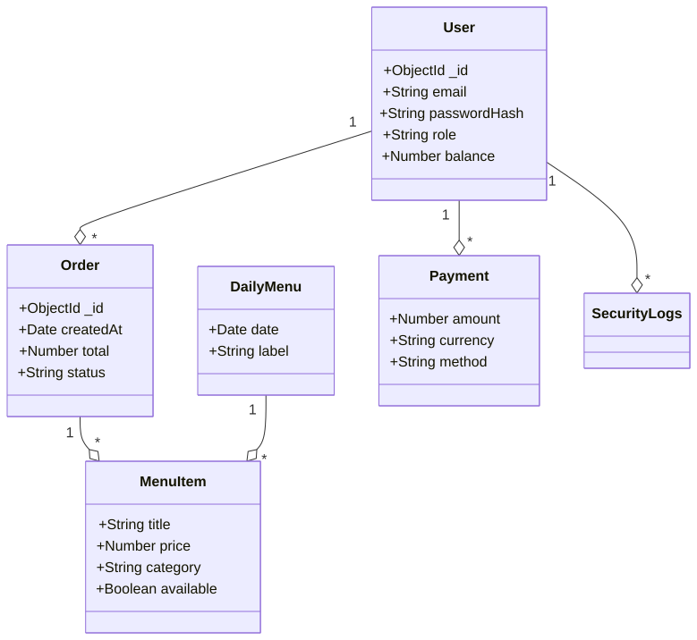
.envváltozók betöltése (pl.MONGODB_URI,DB_NAME) különféle helyeken (src/models/User.js,config/database_queries.js).- Kezdeti
mongoose.connectkötés két fő komponensben (felhasználói hitelesítés és adatbázis lekérdezés csomagoló). - A modellek
module.exports-e más modulokba importálva (src/api.js,src/auth/login.js,src/dashboard/...). - Redis kapcsolódás a
src/redis.jséssrc/cache/*rétegben (rate limit, cache, Change Stream Manager, KeyRegistry).
Főbb funkciók és adatfolyamok a fő modulokban
- Rendelés beküldése:
src/api.js->orderService.validateOrderStock->orderService.convertCartToDbFormat->Order.create/Order.save=>UserLoyalty.updatePointsAtomically(mentés) ->SecurityLogshívás. - Címzett és szülő-diák kapcsolatok:
ParentStudentséma, adminisztráció és hozzáféréssrc/dashboard/*éssrc/models/User.jsszerintuserPersonalInfokapcsolaton keresztül. - E2EE üzenetek:
src/models/Message.jséssrc/models/PreKey.js+src/models/StorageBlob.js+src/LoyaltySystem(további konzisztencia, audit) + frontendsrc/chat/**.
Biztonság és karbantarthatóság jegyzetek
- Jelszavak: A
src/auth/passwordhash.jsbcrypt-tel hasheli és ellenőrzi őket (hash + compare). - Naplózás: Minden fontos művelet (
SecurityLogs) asrc/auth/login.js,src/auth/register.jséssrc/api.jsvégpontoknál történik.
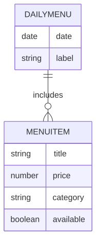
5.3 Algoritmusok és adatszerkezetek {#53-algoritmusok-es-adatszerkezetek}
5.3.1 Adatszerkezetek
- MongoDB gyűjtemények: BSON dokumentumok, beágyazott dokumentumokkal (OrderItems az Order-ben), ObjectId referenciákkal és tömbökkel (allergének, napi menü tételek).
- Redis Stringek/Hash-ek: Munkamenet tárolás, gyorsítótárazott felhasználói adatok, komplex dashboard objektumok.
- Redis rendezett halmazok: Csúszó ablakos rate limiting, időbélyeg alapú score-okkal.
- JavaScript: Objektumok API válaszokhoz, tömbök kosár- és tömeges műveletekhez, Map/Set gyorskereséshez.
5.3.2 Alapvető algoritmusok
Jelszó hash-elés (bcrypt):
const hashedPassword = await bcrypt.hash(password, 12);
const isValid = await bcrypt.compare(password, hashedPassword);
JWT token generálás (HS256):
const token = jwt.sign(payload, secretKey, { expiresIn: '24h' });
const decoded = jwt.verify(token, secretKey);
IP hashing (SHA-256, GDPR megfelelőség):
const hashedIP = crypto.createHash('sha256').update(ipAddress).digest('hex');
Hűségpont számítás:
function ConvertPoints(dollarAmount, tier, healthLevel, date) {
let total = 0;
for (let i = 0; i < Math.floor(dollarAmount); i++) {
total += Math.floor(Math.random() * 6) + 4; // 4–9 points per dollar
}
if (isHoliday(date)) total *= 1.5;
else if (isHolidaySeason(date)) total *= 1.2;
total *= 1 + (healthLevel * 0.2);
const tierBonus = DISCOUNT_RATES[tier] || 0;
total *= 1 + tierBonus;
return Math.floor(total);
}
Szint meghatározás:
const determineTier = (totalPoints) => {
if (totalPoints >= 20000) return 'PLATINUM';
if (totalPoints >= 8000) return 'GOLD';
if (totalPoints >= 2500) return 'SILVER';
if (totalPoints >= 1200) return 'BRONZE';
return 'NONE';
};
Menüelem szűrés:
const filterMenuItems = (items, filters) =>
items.filter(item =>
(!filters.category || item.category === filters.category) &&
(!filters.priceRange || isInRange(item.price, filters.priceRange)) &&
(!filters.allergens || !hasAllergens(item, filters.allergens)) &&
(!filters.searchTerm || item.name.toLowerCase().includes(filters.searchTerm.toLowerCase()))
);
Csúszó ablakos rate limiting (Redis Lua):
local key = KEYS[1]
local window = tonumber(ARGV[1])
local max_requests = tonumber(ARGV[2])
local now = tonumber(ARGV[3])
redis.call('ZREMRANGEBYSCORE', key, 0, now - window)
local current_count = redis.call('ZCARD', key)
if current_count >= max_requests then
return {0, current_count}
end
redis.call('ZADD', key, now, now)
redis.call('EXPIRE', key, window)
return {1, current_count + 1}
Atomi pénztárca-frissítés (Redis Lua):
local current_balance = tonumber(redis.call('GET', KEYS[1]) or '0')
local new_balance = current_balance + tonumber(ARGV[1])
if new_balance < 0 then
return redis.error_reply('INSUFFICIENT_FUNDS')
end
redis.call('SET', KEYS[1], new_balance)
return new_balance
reCAPTCHA ellenőrzés:
const verifyRecaptcha = async (token) => {
const result = await fetch('https://www.google.com/recaptcha/api/siteverify', {
method: 'POST',
body: new URLSearchParams({ secret: process.env.RECAPTCHA_SECRET, response: token })
}).then(r => r.json());
return result.score >= 0.5; // 0.0 = bot, 1.0 = ember
};
5.3.3 Teljesítményoptimalizálás
- Adatbázis indexek: Összetett indexek gyakran lekérdezett mezőkre (például
{ email: 1, isVerified: 1 },{ userId: 1, orderDate: -1 }). - Lapozás: Skip-limit stratégia teljes elemszám használatával nagy adatkészletekhez.
- Tömeges feldolgozás:
bulkWritetöbbszörös rekordfrissítésekhez. - Gyorsítótár middleware: Redis gyorsítótár elsődlegesen, visszaesés MongoDB-re, mintázat alapú érvénytelenítéssel írások esetén.
5.4 Biztonsági tervezés {#54-biztonsagi-tervezes}
5.4.1 Biztonsági funkciók
| Funkció | Részletek |
|---|---|
| Hitelesítés | JWT (HS256), szerepalapú hozzáférés-vezérlés (RBAC) |
| Jelszó tárolás | bcrypt, 10–12 salt kör |
| 2FA | Megvalósítva; Dioxus alapú mobil app, Google-szerű 3 véletlenszám választásos rendszer |
| Rate limiting | express-rate-limit (általános) + Redis Lua csúszó ablak (admin/dashboard) |
| Bemenet-ellenőrzés | Kliens oldali, szerver oldali, adatbázis szintű; express-validator, Mongoose sémák |
| XSS / injekció | xss-clean, helmet, express-mongo-sanitize |
| CSRF | Részleges; tokenek tervezve minden állapotot módosító művelethez |
| CORS | Szigorú szabályzat; csak a hivatalos frontend domain engedélyezett |
| Biztonsági fejlécek | Helmet.js (CSP, HSTS stb.), eval() tiltva, nonce alapú inline script-ek |
| IP hash-elés | SHA-256 a SecurityLogs tárolása előtt (GDPR 32. cikk) |
| reCAPTCHA | Google reCAPTCHA v3 regisztrációhoz és bejelentkezéshez |
| Geolokáció | iplocate.io VPN/Proxy/Tor észlelésre és kockázatpontozásra |
| Fizetési biztonság | PayPal/Google Pay PCI-kompatibilis átjárók |
| Környezeti titkok | Minden hitelesítő adat .env-ben, soha verziókezelésben |
5.4.1.1 Kétfaktoros hitelesítés (2FA)
A rendszer második faktoros hitelesítést használ, ahol a mobil alkalmazás Dioxus technológiával készült. A felhasználó a mobil appon keresztül három véletlenszerű szám közül választ, hasonlóan a Google által ismert "3 random szám" alapú megerősítési modellhez. Ez a választás egy további érvényesítési lépést biztosít a belépési folyamatban, növelve az account biztonságát a jelszón túl.
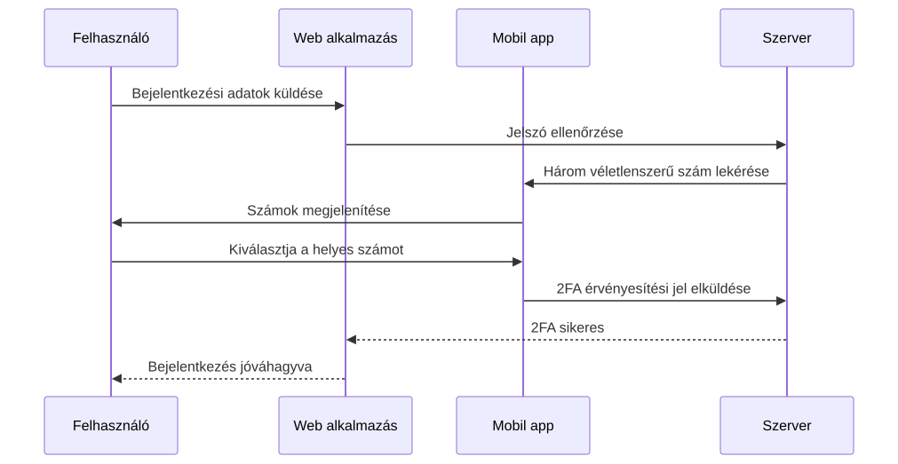
5.4.2 Fenyegetésmodellezés
Azonosított fenyegetések
- Hitelesítés megkerülése: Brute force támadások, hitelesítő adatok kitöltése, JWT token lopás.
- Adatbefecskendezés: SQL/NoSQL injekció, XSS, CSRF támadások.
- Szolgáltatásmegtagadás (DoS): Rate limit megkerülése, erőforráskimerülés.
- Adatszivárgás: Jogosulatlan hozzáférés felhasználói adatokhoz, fizetési információkhoz.
- E2EE kompromittálás: Gyenge kulcscsere, közbeékelt támadások a chaten.
- Belső fenyegetések: Admin jogosultságok visszaélése, adat kimentése.
Mitigációs stratégiák
- Többrétegű hitelesítés reCAPTCHA-val és geolokációs kockázatpontozással.
- Átfogó bemenet-szűrés és parametrizált lekérdezések.
- Elosztott rate limiting Redis-szel a DoS elleni védelemhez.
- Titkosítás nyugalmi helyzetben és átvitel közben (HTTPS, E2EE chathez).
- Legkisebb jogosultság elve és audit naplózás minden műveletnél.
- Rendszeres biztonsági auditok és függőség sebezhetőség vizsgálat.
5.4.3 Incidensreagálási terv
- Felderítés: Automatikus monitorozás SecurityLogs, rate limit riasztások és anomália észlelés alapján.
- Értékelés: Incidens súlyosságának osztályozása (alacsony/közepes/magas) az adatkitettség és rendszerszintű hatás szerint.
- Elzárás: Érintett rendszerek azonnali izolálása, token visszavonás, fiók zárolás.
- Eltávolítás: Alapokozat elemzése, javítás telepítése, kulcs forgatása E2EE esetén.
- Helyreállítás: Rendszer visszaállítása biztonsági mentésekből, felhasználói értesítés, szolgáltatás újraindítása.
- Tapasztalatok levonása: Incidens utáni felülvizsgálat, dokumentáció frissítése, megelőző intézkedések.
5.4.4 Megfelelés és adatvédelem
- GDPR megfelelőség: Adatminimalizálás, hozzájárulás kezelése, törlés joga, IP hash-elés az anonimizáláshoz.
- PCI DSS: A fizetési adatokat nem tároljuk helyben; minden tranzakció minősített átjárókon keresztül történik.
- Adattárolási szabályok: A SecurityLogs 2 évig megőrzésre kerül, a felhasználói adatok a fiók törléséig.
- Privacy by Design: Alapértelmezett titkosítás, hozzáférésszabályozás és audit naplók.
5.4.5 Biztonsági tesztelés
- Automatizált tesztcsomagok hitelesítési folyamatokhoz, bemenet-szűréshez és rate limitinghez.
- Rendszeres manuális penetrációs tesztelés az automata eszközökkel nem észlelt sebezhetőségek feltárására.
- Függőségek vizsgálata
npm audités Snyk integráció segítségével. - OWASP ZAP a dinamikus alkalmazásbiztonsági teszteléshez.
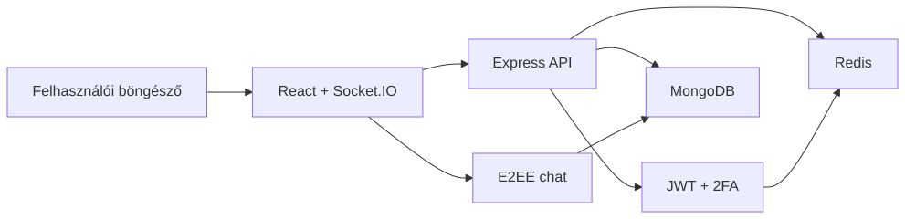
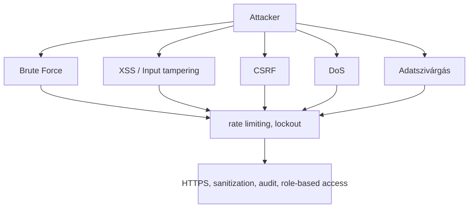
6. Megvalósítás {#6-megvalositas}
6.1 Könyvtárstruktúra {#61-konyvtarszerkezet}
├── config/
│ ├── DATABASE_CONSTANTS.JS
│ ├── database_queries.js
│ └── hu.json
├── data/
│ ├── disposable_email_list.json
│ ├── Most_used_passwords.json
│ └── database_test/
├── docs/
├── public/
│ ├── chat/
│ ├── dashboard/
│ │ ├── admin/
│ │ ├── editor/
│ │ ├── parent/
│ │ └── student/
│ └── Order/
├── src/
│ ├── main.js
│ ├── auth/
│ │ ├── 2fa.js
│ │ ├── login.js
│ │ ├── register.js
│ │ ├── password_reset.js
│ │ └── validation.js
│ ├── cache/
│ │ ├── ChangeStreamManager.js
│ │ └── KeyRegistry.js
│ ├── dashboard/
│ ├── LoyaltySystem/
│ │ └── loyalty-service.js
│ ├── models/
│ ├── Orders/
│ ├── payments/
│ └── services/
└── tests/
└── performance_tests/
6.2 Backend megvalósítás {#62-backend-megvalositas}
6.2.1 Technológiai stack
Node.js + Express.js, MongoDB + Mongoose, Redis + Lua szkriptek, JWT, bcrypt, PayPal és Google Pay API-k, Socket.IO.
6.2.2 Fő alkalmazási felépítés
src/main.js: Belépési pont — Express beállítása, middleware-ek (Helmet, CORS, munkamenet, rate limit), és az útvonalak felcsatolása.- Útvonalak: Domain alapú moduláris szétválasztás (
auth,dashboard,orders,payments,chat). - Modellek: Mongoose sémák a
src/models/mappában. - Szolgáltatások: Üzleti logika külön modulokban (
loyalty-service.js,paypal-service.js,cache-service.js, stb.).
6.2.3 Hitelesítés és biztonság
A regisztráció érvényesíti a bemenetet, ellenőrzi a reCAPTCHA-t, bcrypttel hash-eli a jelszót, küld egy e-mailes ellenőrzőkódot, és naplózza az eseményt. A bejelentkezés ellenőrzi a hitelesítő adatokat, JWT-t ad ki, naplózza az IP/hely alapú kockázatot és IP-nként rate limitinget alkalmaz.
// Regisztrációs példa — src/auth/register.js
const hashedPassword = await bcrypt.hash(password, 10);
const user = new User({ username, password: hashedPassword, email });
await user.save();
await createSecurityLog('USER_REGISTER', { username, email }, clientIp);
res.status(200).json({ message: 'Regisztráció sikeres! Ellenőrizze e-mailjét az érvényesítéshez.' });
6.2.4 Rendelés- és fizetésfeldolgozás
A rendelési folyamat érvényesíti a kosarat a valós készlet alapján, létrehoz egy függőben lévő rendelést MongoDB-ben, meghívja a PayPal vagy Google Pay API-t, majd foglaláskor megerősíti a fizetést, levonja a készletet, jóváírja a hűségpontokat és naplózza a tranzakciót.
// Rendelés létrehozása — src/api.js
router.post('/orders', async (req, res) => {
// felhasználó és készlet ellenőrzése...
const { jsonResponse, httpStatusCode } = await paypalService.createOrder(cart, currency, amount);
// rendelés mentése az adatbázisba...
res.status(httpStatusCode).json(jsonResponse);
});
6.2.5 Gyorsítótárazás és teljesítmény
A Redis az alkalmazás teljes területén az elsődleges gyorsítótárazási réteg, al-másodperces válaszidőt biztosítva gyakran lekérdezett adatok esetén, és lehetővé téve összetett atomi műveleteket Lua szkripteléssel. A rendszer többrétegű gyorsítótárazási stratégiát valósít meg, mely Redis-t és MongoDB változásfolyamokat (change stream) használ a gyorsítótár érvénytelenítésére.
Redis használata az oldalon
- Munkamenet-kezelés: A felhasználói munkamenetek Redisben tárolódnak automatikus lejárattal (TTL), lehetővé téve a backend állapotmentes vízszintes skálázását. A munkamenetek tartalmazzák a felhasználó azonosítóját, szerepkört és ideiglenes tokeneket.
- Irányítópult adatgyorsítótárazása: Admin és felhasználói irányítópult statisztikák (felhasználó-szám, rendelés összeg, menüpont elérhetősége) 5-10 percig vannak gyorsítótárazva, hogy csökkentsék az adatbázis terhelését csúcsidőben.
- Menüpont gyorsítótár: A napi menü és elérhető tételek gyorsítótárazva vannak változásfolyam érvénytelenítéssel, amikor a készletszintek változnak vagy új tételek kerülnek hozzáadásra.
- Rate limit tároló: Az általános API rate limitek és az admin-specifikus csúszó ablakos limitek Redis-t használnak háttértárolóként az elosztott érvényesítéshez.
- Hűségpont gyorsítótár: A felhasználói hűségadatok (pontok, szint, kedvezmények) rövid ideig vannak gyorsítótárazva, hogy elkerüljük a többszöri számítást az irányítópult betöltésekor.
- Biztonsági naplók összegzése: A legutóbbi biztonsági események gyorsítótárazva vannak az admin gyors hozzáférése érdekében, időnkénti frissítéssel MongoDB-ból.
- Fizetési munkamenet gyorsítótár: Ideiglenes fizetési szándékok és PayPal/Google Pay munkamenet adatok Redisben tárolódnak a tranzakció feldolgozása során.
Gyorsítótár-érvénytelenítési stratégia
A rendszer MongoDB változásfolyamokat (src/cache/ChangeStreamManager.js) használ az adatbázis írási műveleteinek figyelésére, és automatikusan érvényteleníti a kapcsolódó Redis kulcsokat. Például:
- A menüelemek frissítései érvénytelenítik a menü gyorsítótár kulcsait.
- A felhasználói egyenleg változásai érvénytelenítik a hűség- és irányítópult gyorsítótárakat.
- Az új rendelések érvénytelenítik a statisztika gyorsítótárakat.
Teljesítmény optimalizálás
- Kapcsolat poolozás: Redis kapcsolatok poolozva és újrahasznosítva vannak a terhelés minimalizálása érdekében.
- Kulcsnév konvenció: Strukturált kulcsok (pl.
menu:items:category:soup) lehetővé teszik a mintaalapú érvénytelenítést. - TTL menedzsment: Az automatikus lejárat megakadályozza a memória szivárgását, hosszabb TTL-lel a stabil adatoknál (24 óra felhasználói profilok esetén), rövidebb TTL-lel a változékony adatoknál (5 perc statisztikáknál).
- Tartalék kezelés: Ha a Redis nem elérhető, a rendszer zökkenőmentesen átvált közvetlen MongoDB lekérdezésekre naplózással.
// Expanded cacheResult middleware with invalidation hooks
function cacheResult(cacheKey, ttl = 300, invalidationPatterns = []) {
return async (req, res, next) => {
if (!isRedisAvailable()) return next();
const key = typeof cacheKey === 'function' ? cacheKey(req) : cacheKey;
const cached = await redisClient.get(key);
if (cached) {
res.set('X-Cache', 'HIT');
return res.status(200).json(JSON.parse(cached));
}
res.set('X-Cache', 'MISS');
const originalJson = res.json;
res.json = function(data) {
redisClient.setEx(key, ttl, JSON.stringify(data));
// Register invalidation patterns for change streams
invalidationPatterns.forEach(pattern => registerInvalidation(key, pattern));
return originalJson.call(this, data);
};
next();
};
}
Monitoring and Metrics
A Redis teljesítményét beépített INFO parancsokkal figyelik, nyomon követve a találati arányokat (>90% cél), memóriahasználatot és kiszórási arányokat. A lassú lekérdezéseket optimalizáció céljából naplózzák.
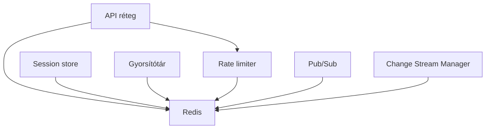
6.2.6 Hűségprogram
A pontok rendelésenként számolódnak véletlenszerű érték alapján (4–9 pont/dollár), szorzva ünnepi, egészségszint és tier bónuszokkal. Tier-ek: NONE → BRONZE (1200 pont) → SILVER (2500) → GOLD (8000) → PLATINUM (20000). Lásd src/LoyaltySystem/loyalty-service.js és config/DATABASE_CONSTANTS.JS a díjszabásokhoz.
6.2.7 Rate Limiting
Két stratégiát alkalmaz: express-rate-limit Redis tárolóval általános API végpontokra, valamint egy egyedi Redis Lua csúszóablakos script admin/dashboard útvonalakhoz (30 kérés/perc). A Lua megvalósítás atomi — egyetlen megszakíthatatlan tranzakcióként fut, ezzel elkerülve a versenyhelyzeteket nagy párhuzamos terhelésnél. Lásd a Lua scriptet az 5.3.2 szakaszban.
6.2.8 Bővíthetőség és karbantarthatóság
A backend rétegezett, szolgáltatásorientált architektúrát használ (route-ok → szolgáltatások → modellek). A konfiguráció környezeti változókon keresztül történik .env fájl segítségével. A hibakezelés központilag történik Express hibakezelő middleware-eken keresztül, amelyek naplózzák a biztonsági eseményeket és biztonságos üzeneteket küldenek a kliensnek. Az állapotmentes JWT tervezés és a Redis munkamenet tárolás vízszintes skálázást tesz lehetővé. A függőségek npm audit-tal vannak kezelve és naprakészen tartva.
6.3 Frontend megvalósítás {#63-frontend-megvalositas}
6.3.1 Technológiai stack
React.js JSX-szel, Tailwind CSS stílushoz, Socket.IO kliens valós idejű kommunikációhoz, egyéni E2EE kriptó könyvtár, mobil-first reszponzív tervezés.
6.3.2 Fő alkalmazás felépítés
- Statikus HTML oldalak: Belépési pontok a
public/mappában (pl.index.html,login.html,chat/index.html). - React komponensek: Moduláris JSX komponensek,
<script>címkékből betöltve, ReactDOM-mal renderelve. - Állapotkezelés: Lokális komponensállapot
useState,useEffectés egyéni hook-ok (pl.useAdminData.js) használatával. - Routing: Kliens oldali útválasztás URL hash változások és feltételes renderelés alapján.
- Stílus: Tailwind CSS osztályok reszponzív, utility-first tervezéshez.
6.3.3 Kulcsfontosságú komponensek és funkciók
Dashboard rendszer
Az adminisztrációs irányítópult (public/dashboard/admin/admin.jsx) sidebar navigációt, felhasználók, statisztikák, menüpontok, jutalmak, egészségellenőrzések és beállítások szakaszait tartalmazza. Egy egyedi useAdminData hookot használ az adatok REST API-król történő lekérésére és kezelésére.
// Admin irányítópult felépítés — public/dashboard/admin/admin.jsx
const AdminDashboard = () => {
const [activeSzakasz, setActiveSzakasz] = useState('users');
const { stats, users, menuItems, rewards, loading } = useAdminData();
return (
<div className="min-h-screen bg-gradient-to-br from-accent to-white">
<AdminHeader />
<div className="flex">
<AdminSidebar activeSzakasz={activeSzakasz} setActiveSzakasz={setActiveSzakasz} />
<main className="flex-1 p-4">
{activeSzakasz === 'users' && <UsersSzakasz users={users} />}
{/* Other Szakaszs */}
</main>
</div>
</div>
);
};
Rendelési és kosár rendszer
A rendelési oldal (public/order/order.jsx) bevásárlókosarat valósít meg useCart hookkal állapotkezeléshez, valós idejű készletellenőrzéssel és fizetési integrációval.
// Cart Management — public/order/useCart.js
const useCart = () => {
const [cart, setCart] = useState([]);
const addToCart = (item) => setCart([...cart, item]);
// ... validation, total calculation
return { cart, addToCart, removeFromCart, getTotal };
};
E2EE Chat Interface
A chat rendszer (public/chat/chat.jsx) végpontok közötti titkosítási beállítást, kulcscserét és valós idejű üzenetküldést kezel Socket.IO-n keresztül. Tartalmaz eszközszinkronizációt és kulcs-helyreállítási funkciókat.
// Chat állapotkezelés — public/chat/chat.jsx
const E2EEChatApp = () => {
const [conversations, setConversations] = useState([]);
const [activeConversation, setActiveConversation] = useState(null);
const [messages, setMessages] = useState({});
// ... E2EE setup, message sending/receiving
};
Mobil reszponzivitás
Mobil-specifikus komponensek (pl. MobileAdminNav.jsx, MobileCart.jsx) érintésbarát felületet biztosítanak összecsukható navigációval és toast értesítésekkel.
6.3.4 Állapotkezelés és adatlekérés
- Lokális állapot: React hook-ok komponens-specifikus állapotkezeléséhez (betöltés, hibák, űrlapadatok).
- API integráció: Fetch API REST hívásokhoz, hibakezeléssel és betöltési állapotokkal.
- Valós idejű frissítések: Socket.IO chat üzenetekhez és élő értesítésekhez.
- Gyorsítótárazás: Böngésző
localStoragea felhasználói hivatkozások és munkamenet adatok számára.
6.3.5 UI/UX tervezési elvek
- Akadálymentesség: ARIA címkék, billentyűzet-navigáció, nagy kontrasztú színek.
- Teljesítmény: komponensek késleltetett betöltése, optimalizált képek, minimális újrarenderelés.
- Felhasználói élmény: fokozatos funkcióbővítés, hibahatárok, betöltési jelzők.
- Biztonság: bemenet-szűrés, XSS védelem a React beépített escape mechanizmusával.
6.3.6 Build és telepítés
- Fejlesztés: Hot reloading böngésző fejlesztőeszközökkel.
- Éles környezet: Minimalizált csomagok statikusan kiszolgálva a
public/mappából. - Böngésző-kompatibilitás: Tesztelve modern böngészőkben, visszafelé kompatibilis tartalékmegoldásokkal az régebbi verziókhoz.
6.3.7 Bővíthetőség és karbantarthatóság
A frontend komponens-alapú architektúrát követ újrafelhasználható UI elemekkel. A Tailwind utility osztályai egységes stílust biztosítanak. Az egyedi hookok összefoglalják az összetett logikát, így a komponensek tesztelhetők és karbantarthatók. A mobil-first megközelítés eszközfüggetlen skálázhatóságot biztosít.
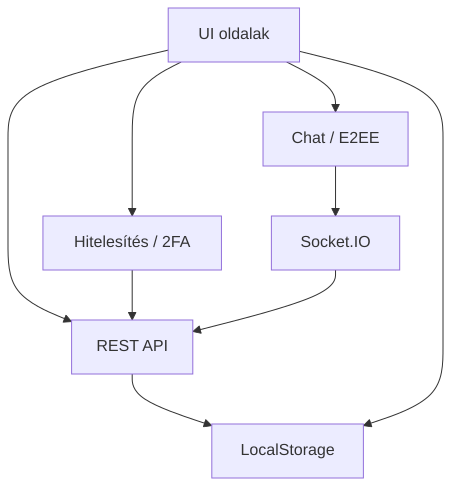
7. API referencia {#7-api-referencia}
Minden végpont aktív munkamenetet igényel, kivéve, ha nyilvános megjelölést kap. A hitelesítési hiba 401 Unauthorized-t ad vissza; a jogosultság hiánya 403 Forbidden-t.
Főalkalmazás útvonalak
| Módszer | Végpont | Hitelesítés | Leírás |
|---|---|---|---|
| GET | /login |
Nyilvános | Bejelentkező oldal |
| GET | /register |
Nyilvános | Regisztrációs oldal |
| GET | /password-reset/:token |
Nyilvános | Jelszó-visszaállítás oldal |
| GET | /pay |
Munkamenet | Fizetési oldal |
| GET | /chat |
Munkamenet | E2EE chat felület |
Hitelesítési útvonalak
| Módszer | Végpont | Hitelesítés | Leírás |
|---|---|---|---|
| POST | /register |
Nyilvános | Felhasználói regisztráció |
| POST | /login |
Nyilvános | Felhasználói bejelentkezés |
| POST | /logout |
Munkamenet | Felhasználói kijelentkezés |
| GET | /logout |
Munkamenet | Kijelentkezés (átirányítás) |
| POST | /2fa |
Nyilvános | Kétfaktoros hitelesítés |
| POST | /email-verification/verify-code |
Nyilvános | E-mail kód ellenőrzése |
| GET | /email-verification/verify/:token |
Nyilvános | E-mail token ellenőrzése |
| POST | /password-reset/ |
Nyilvános | Jelszó-visszaállítás kérése |
| GET | /password-reset/:token |
Nyilvános | Jelszó-visszaállítás űrlap |
| POST | /password-reset/:token |
Nyilvános | Új jelszó küldése |
| POST | /forgot-password/ |
Nyilvános | Elfelejtett jelszó kérése |
Példa — POST /register:
// Kérés
{ "username": "johndoe", "password": "SecurePass123!", "email": "john@example.com", "isParent": "false", "g-recaptcha-response": "token" }
// Válasz 200
{ "message": "Regisztráció sikeres! Ellenőrizze e-mailjét az ellenőrzőkódért." }
// Hibák: 400 (validálás/CAPTCHA), 429 (túl sok kérés), 500
Példa — POST /login:
// Kérés
{ "username": "johndoe", "password": "SecurePass123!" }
// Válasz 200: "Üdvözlünk, johndoe"
// Hibák: 400, 401 (hibás hitelesítő adatok), 429, 500
Irányítópult útvonalak
| Módszer | Végpont | Hitelesítés | Leírás |
|---|---|---|---|
| GET | /dashboard/ |
Munkamenet | Fő irányítópult (szerepkör átirányítás) |
| GET | /dashboard/admin |
Admin | Adminisztrátori irányítópult |
| GET | /dashboard/student |
Diák/Szülő | Diák irányítópult |
Adminisztrátori irányítópult API útvonalak
Minden útvonal admin munkamenetet igényel. Hibák: 401, 403, 500.
| Módszer | Végpont | Leírás |
|---|---|---|
| GET | /dashboard/admin/usercount |
Összes felhasználó száma |
| GET | /dashboard/admin/userlist |
Az összes felhasználó listája |
| GET | /dashboard/admin/stats |
Rendszerstatisztikák |
| GET | /dashboard/admin/signup-stats |
Regisztrációs statisztikák |
| GET | /dashboard/admin/orders |
Összes rendelés |
| GET | /dashboard/admin/soldout |
Elfogyott tételek |
| GET | /dashboard/admin/itemcount |
Menüelemek száma |
| GET | /dashboard/admin/menulist |
Menüelemek listája |
| GET | /dashboard/admin/stockalerts |
Alacsony készlet figyelmeztetések |
| GET | /dashboard/admin/paymentstats |
Fizetési statisztikák |
| GET | /dashboard/admin/health |
Rendszer állapot ellenőrzés |
| GET | /dashboard/admin/menuitem_export |
Menüelemek exportálása |
| GET | /dashboard/admin/delete_menuitem/:id |
Menüelem törlése |
| POST | /dashboard/admin/create_menuitem |
Menüelem létrehozása |
| PUT | /dashboard/admin/menuitem/:id |
Menüelem frissítése |
Példa — GET /dashboard/admin/health válasz:
{ "overall": "ok", "services": { "database": "healthy", "redis": "healthy", "sessions": "healthy", "externalServices": { "paypal": "configured", "googlepay": "configured" } } }
Diák irányítópult útvonalak
| Módszer | Végpont | Hitelesítés | Leírás |
|---|---|---|---|
| GET | /dashboard/student/freeze_account |
Diák | Fiók felfüggesztése oldal |
| POST | /dashboard/student/parent/link |
Diák | Szülői fiók összekapcsolása |
Rendeléskezelő útvonalak
| Módszer | Végpont | Hitelesítés | Leírás |
|---|---|---|---|
| GET | /Order/ |
Munkamenet | Rendelés oldal |
| GET | /Order/menu_items |
Munkamenet | Elérhető menüelemek |
| GET | /Order/:orderID |
Munkamenet | Rendelés részletek |
| POST | /Order/Order |
Munkamenet | Új rendelés létrehozása |
| PUT | /Order/:orderID/status |
Munkamenet | Rendelés állapot frissítése |
| POST | /Order/:orderID/capture |
Munkamenet | Fizetés rögzítése |
Példa — POST /Order/Order:
// Request
{ "cart": [{ "id": "item_id", "quantity": 2, "price": 8.99 }], "currency": "USD", "amount": 17.98 }
// Response: PayPal order JSON
// Errors: 400 (invalid cart/stock), 401, 500
Általános API útvonalak
| Módszer | Végpont | Hitelesítés | Leírás |
|---|---|---|---|
| GET | /api/test |
Nyilvános | API állapot ellenőrzése |
| GET | /api/current_user |
Munkamenet | Bejelentkezett felhasználó adatok |
| GET | /api/menu-items |
Munkamenet | Elérhető menüelemek |
| POST | /api/orders |
Munkamenet | PayPal rendelés létrehozása |
| POST | /api/orders/:orderID/capture |
Munkamenet | PayPal fizetés rögzítése |
| POST | /api/orders/googlepay |
Munkamenet | Google Pay rendelés létrehozása |
| POST | /api/orders/googlepay/complete |
Munkamenet | Google Pay tranzakció lezárása |
| POST | /api/payments/paypal |
Munkamenet | PayPal fizetés feldolgozása |
| POST | /api/payments/googlepay |
Munkamenet | Google Pay fizetés feldolgozása |
Példa — POST /api/orders/googlepay/complete:
// Request
{ "orderId": "order_123", "paymentMethodData": {}, "transactionId": "txn_456" }
// Response
{ "success": true, "orderId": "order_123", "transactionId": "txn_456", "loyaltyPointsAwarded": 8 }
// Errors: 400, 401, 404, 500
Chat API és WebSocket útvonalak
| Módszer | Végpont | Hitelesítés | Leírás |
|---|---|---|---|
| GET | /chat |
Munkamenet | Chat felület |
| WS | /chat |
Munkamenet | WebSocket valós idejű chathez |
| POST | /chat/setup-e2ee |
Munkamenet | E2EE nyilvános kulcs beállítása |
| GET | /chat/public-key/:userId |
Munkamenet | Felhasználó nyilvános kulcsának lekérése |
| POST | /chat/send-message |
Munkamenet | Titkosított üzenet küldése |
| GET | /chat/messages/:otherUserId |
Munkamenet | Beszélgetés üzeneteinek lekérése |
| GET | /chat/message/:messageId |
Munkamenet | Egy üzenet lekérése |
| POST | /chat/message/:messageId/replace |
Munkamenet | Üzenet helyettesítése |
| PUT | /chat/messages/read/:otherUserId |
Munkamenet | Üzenetek olvasottként jelölése |
| GET | /chat/conversations |
Munkamenet | Beszélgetések listája |
| GET | /chat/search-users |
Munkamenet | Felhasználók keresése |
| GET | /chat/e2ee-status |
Munkamenet | E2EE állapot lekérése a jelenlegi felhasználóhoz |
| POST | /chat/reset-e2ee |
Munkamenet | E2EE kulcsok visszaállítása |
| POST | /chat/backup-keys |
Munkamenet | Titkosított privát kulcs mentése |
| GET | /chat/has-key-backup |
Munkamenet | Kulcsmásolat meglétének ellenőrzése |
| GET | /chat/restore-keys |
Munkamenet | Privát kulcs visszaállítása |
| POST | /chat/admin/clear-all-e2ee |
Admin | Minden E2EE adat törlése (csak admin) |
| POST | /chat/request-sender-recovery |
Munkamenet | Küldőkulcs helyreállításának kérése |
| GET | /chat/pending-recovery |
Munkamenet | Helyreállítást igénylő üzenetek lekérése |
WebSocket események:** newMessage, messageReplaced, processPendingRecovery
Minden chatüzenet kliensoldalon van titkosítva (E2EE). A szerver csak a titkosított szöveget és metaadatokat tárolja.
Backend modellek (MongoDB)
User modell
| Field | Type | Notes |
|---|---|---|
| username | String | Required, unique |
| password | String | bcrypt hashed (10 rounds) |
| String | Required, unique, validated | |
| isVerified | Boolean | Default false |
| usertype | Enum | admin / student / parent / teacher / frozen / editor |
| balance | Number | Wallet balance, default 0 |
| isBanned | Boolean | Default false |
| identity | Subdocument | E2EE identity fields |
| devices | Array | Registered device info |
Gyorsítótárazás — Redis kulcs-regiszter
A projekt egy központi src/cache/KeyRegistry.js-t használ, hogy a MongoDB kollekciókat a vonatkozó Redis gyorsítótár kulcsokhoz társítsa, ezzel biztosítva az írások utáni konzisztens gyorsítótár érvénytelenítést:
const keyRegistry = {
users: (userId) => [`user:username:${userId}`, 'admin:usercount', 'admin:userlist', ...],
menuitems: (itemName) => [`menu_item:${itemName}`, 'admin:menulist', 'editor:menulist', ...],
orders: (orderId) => [`order:${orderId}`, 'admin:orders', 'admin:most_bought_items_alltime', ...],
payments: (userId) => [`student:transactions:${userId}`, 'admin:paymentstats', ...],
userloyalties:(userId) => [`student:loyalty:${userId}`, `wallet:user:${userId}`, ...],
// ... (see KeyRegistry.js for full list)
};
8. Adatmodell és kódlap leképezése {#8-adatmodell-es-kodlap-lekepezese}
8.1 Fő adatbázis entitások (MongoDB, Mongoose)
-
User(asrc/models/User.js-ben): alap felhasználói fiók entitás hitelesítési mezőkkel, szerepekkel, státuszjelzőkkel, egyenleggel, tiltási adatokkal, E2EE identitással, regisztrált eszközökkel, helyreállítási blobbal és régi titkosítási mezőkkel. -
Payment(aconfig/database_queries.js-ben): fizetési rekordok összeggel, valutával, fizetési móddal, státusszal, tranzakció hivatkozással és létrehozás időbélyeggel. -
MenuItems(aconfig/database_queries.js-ben): menüelemek készlettel, árazással, kategóriával, elérhetőséggel, QR kóddal, allergénekkel, táplálkozási adatokkal és beágyazott értékelésekkel. -
Order(aconfig/database_queries.js-ben): felhasználói rendelések tételekkel, összegekkel, státuszokkal, átvételi idővel, fizetési hivatkozásokkal és nyilvános azonosítóval. -
OrderItems(Orderséma beágyazott eleme): katalógus tételek kapcsolat rendelések mennyiségével. -
UserLoyalty(aconfig/database_queries.js-ben): hűségpontok, szintek, kedvezmények, történet, streakek, csökkenés kezelése. -
DailyMenu(aconfig/database_queries.js-ben): időponthoz kötött menüsorozat aMenuItemselemekhez. -
ParentStudent(aconfig/database_queries.js-ben): szülő és diák felhasználók közötti kapcsolódási rekordok. -
SecurityLogs(aconfig/database_queries.js-ben): biztonsági esemény audit naplói akcióval, típussal, IP-vel és geolokációs metaadatokkal. -
DeviceSyncSession(asrc/models/DeviceSyncSession.js-ben): átmeneti munkamenet adatok E2EE szinkronizációhoz, TTL indexselexpiresAt-on. -
Message(asrc/models/Message.js-ben): E2EE üzenet tároló (Double Ratchet/X3DH metaadat), státusz nyomon követés, indexek hatékony lekéréshez. -
PreKey(asrc/models/PreKey.js-ben): prekey-k X3DH bootstrappinghez, egyedi és indexelési megszorításokkal. -
StorageBlob(asrc/models/StorageBlob.js-ben): titkosított tárolt blobok munkamenet/üzenet állapothoz, egyedi user/blobType/partition kombinációnként. -
RewardésRedemption(aconfig/database_queries.js-ben): kibővített hűségprogram katalógus és utalvány entitásokkal.
8.3 Entitás leképezés kódbeli modulokra
- Hitelesítési útvonalak:
src/auth/register.js,src/auth/login.js,src/auth/2fa.js,src/auth/password_reset.js,src/auth/email_verification.js. - API koordináció:
src/api.jskezeli a rendeléseket (/orders,/orders/googlepay,/orders/:orderID/capture, stb.), a fizetéseket, és kapcsolódikorderService,paypalServiceésgooglePayServiceszolgáltatásokhoz. - Dashboard és admin végpontok: a
src/dashboard/*-ből csatolva asrc/main.js-en keresztül. - Cache és nagy áteresztőképességű műveletek:
src/cache/ChangeStreamManager.js,src/cache/KeyRegistry.js,src/redis.js. - E2EE logika:
src/models/Message.js,src/models/PreKey.js,src/models/StorageBlob.js,src/models/DeviceSyncSession.js, valamint frontend chat komponensek apublic/chatalatt.
8.4 Adatbázis logika és megszorítások
MenuItemspre-save hookkal:availablefalse, hastock <= 0.Orderpre-save hookkal: 15 percnél régebbiPendingrendelésekCancelled-re állnak.UserLoyaltytartalmazupdatePointsAtomicallystatikus metódust tranzakciós logikával, csökkenési szabályokkal, szintfrissítéssel és kedvezmény újraszámolással.DeviceSyncSessionTTL indexszel:expiresAtexpireAfterSeconds: 0-val automatikus tisztításhoz.Messageindexek:senderId/recipientId/createdAt,recipientId/status,recipientDeviceId/status,createdAt, és egyparticipantsvirtuális.PreKeyindexek:userId/deviceId/usedés egyediuserId/keyId.StorageBlobindexek: egyedi(userId, blobType, partitionKey)ésuserId/updatedAt.
8.5 Üzleti folyamatok átfogó ábrázolása (dokumentszintű)
-
A felhasználó rendelést hoz létre a frontend
/api/ordersútvonalon. -
Az
api.jsérvényesíti a rendelés inputját és a készletet azorderService.validateOrderStocksegítségével. -
Ha PayPal/Google Pay fizetés történik, a megfelelő külső API hívás megtörténik, majd az
orderService.saveCompletedOrdervagyorderService.completePaypalOrderlezárja az adatbázis állapotát. -
A rendelést menti az
Ordergyűjteménybe és létrehozza aPaymentrekordot. -
A
UserLoyalty.updatePointsAtomicallyfrissíti a pontokat és szinteket aUserLoyaltygyűjteményben. -
Biztonsági naplók íródnak a
SecurityLogsgyűjteménybe. -
Ha a rendelés befolyásolja a menü készletét, a
MenuItemsrendezett halmaz gyorsítótára aKeyRegistryalapján érvénytelenül, és szükség esetén aChangeStreamManageris érvénytelenít.
8.6 Környezet- és konfigurációs alapok
.envértékek:MONGODB_URI,DB_NAME,JWT_LOGIN_SECRET,PAYPAL_CLIENT_ID,PAYPAL_SECRET,GOOGLE_PAY_MERCHANT_ID,RECAPTCHA_SECRETésREDIS_URL.mongoose.connectasrc/models/User.jsés aconfig/database_queries.jsfájlokban van meghívva. Használj kapcsolatpoolozást és monitorozást.dotenvhasználat mindkét fájlbanrequire('dotenv').config()formában történik.
8.7 Tesztelési hivatkozások
- Egység- és integrációs tesztek a
tests/éstests/performance_tests/könyvtárakban találhatók. - Létező seed szkriptek:
tests/creating_test_users.js,tests/seed_rewards.js. - Biztonsági és regressziós tesztek:
tests/query_security_logs.js,tests/register_testing.py.
9. Tesztelés és érvényesítés {#9-teszteles-es-ervenyesites}
(Szakasz to be completed)
9. Felhasználói kézikönyv {#9-felhasznaloi-kezikonyv}
(Szakasz to be completed)
10. Telepítés és karbantartás {#10-telepites-es-karbantartas}
(Szakasz to be completed)
11. Következtetés és jövőbeni munka {#11-kovetkeztetes-es-jovobeni-munka}
(Szakasz to be completed)
12. Hivatkozások {#12-hivatkozasok}
(Szakasz to be completed)
13. Mellékletek {#13-mellekletek}
(Szakasz to be completed)